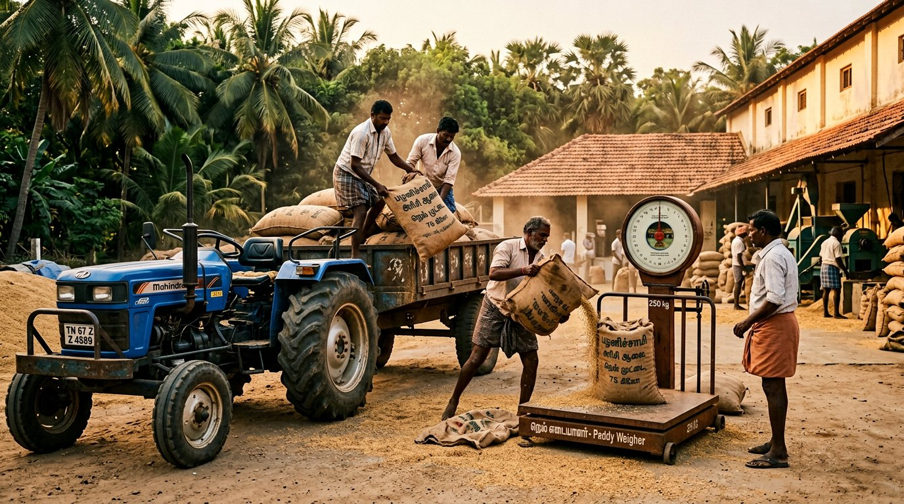

Stage 01
STAGE 01
Paddy intake
Paddy arrives from partner farms across the Karur belt and the delta. Each lot is weighed, sampled for moisture and visually graded before we agree to buy it. Lots that do not meet the mark go back the same day — we would rather turn away a truckload than mill a batch we cannot stand behind.
- Weighbridge entry for every lot
- Moisture sampled before unloading
- Lot-wise record kept for traceability